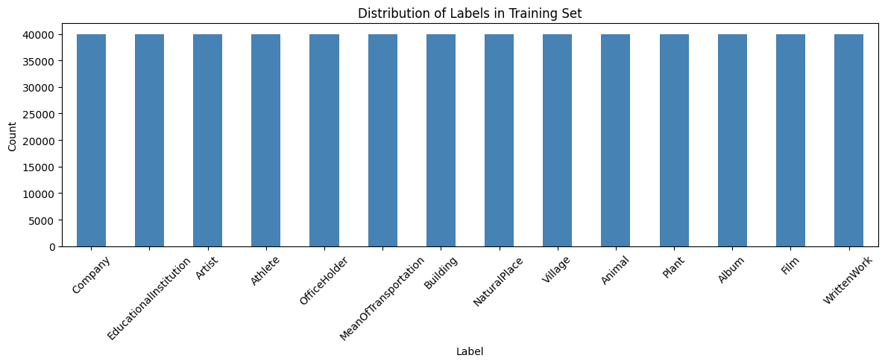
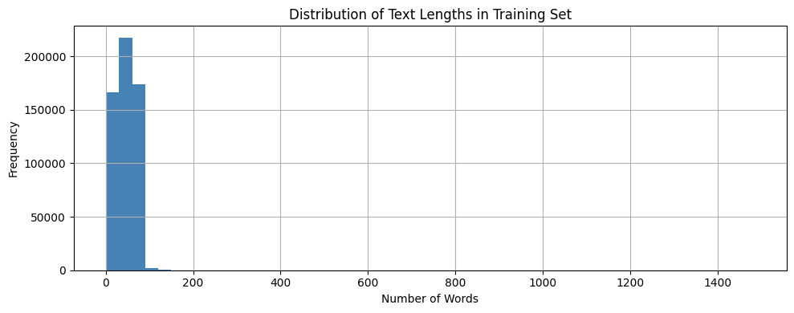
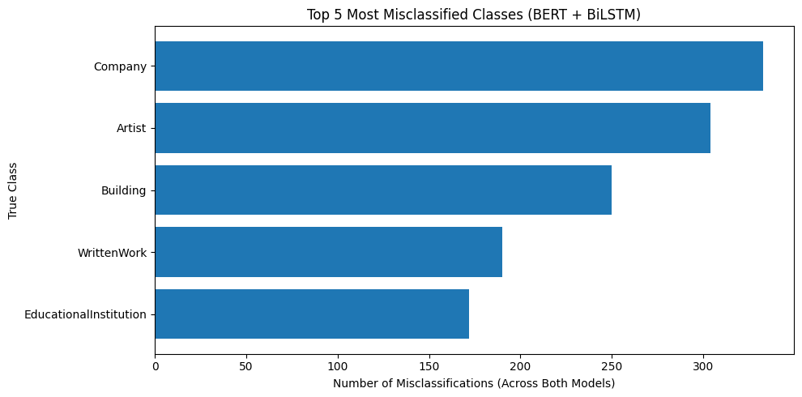

1. Exploratory Data Analysis (EDA)
1.1 Dataset Overview
The DBpedia14 The dataset is a large collection of Wikipedia articles categorized into 14 ontology-based classes, representing various types of real-world entities such as organizations, people, locations, and creative works (Dataset source: HuggingFace - DBpedia14)
- Total Samples: 700,000 texts.
- Data Type:Short text documents (titles and abstracts from Wikipedia articles)
- Text Length:Typically ranges from a few words to short paragraphs.
- Data Split: Stratified split of 90% Training (630,000 texts) and 10% Testing (70,000 texts).
- Target Classes (14 categories):
CompanyEducationalInstitutionArtistAthleteOfficeHolderMeanOfTransportationBuildingNaturalPlaceVillageAnimalPlantAlbumFilmWrittenWork
1.2 Class Distribution
The dataset is perfectly balanced, with exactly 40,000 training samples per class. The 14 classes include:

Figure 1.1: Distribution of labels in training set.
1.3 Text Length Analysis
We analyzed the word count distribution of the 'content' field to understand text complexity:
| Metric | Word Count |
|---|---|
| Mean Length | ~46 words |
| Median (50%) | 46 words |
| Maximum Length | 1,484 words |
| Standard Deviation | 22.46 |
Most descriptions are concise, falling within the 27 to 65-word range (25th to 75th percentiles).

Figure 1.2: Distribution of text length in training set.
2. Proposed Training Pipeline
To prepare the DBpedia-14 text data for deep learning models, we implemented a two-branch pipeline sharing a common preprocessing step:
3. Evaluation Metrics
The evaluation results show that both models achieve very high performance on DBpedia-14. BERT performs slightly better than BiLSTM across all weighted metrics, indicating stronger text representation quality.
| MODEL | PRECISION ↑ | RECALL ↑ | F1-SCORE ↑ | ACCURACY ↑ |
|---|---|---|---|---|
| BERT | 99.49 | 99.48 | 99.49 | 99.48 |
| BiLSTM | 98.77 | 98.77 | 98.77 | 98.77 |
-
The results indicate that both models achieve very high classification performance on the DBpedia-14 dataset. However, BERT consistently outperforms BiLSTM across all evaluation metrics. This suggests that contextual representations learned by transformer-based models are more effective for text classification compared to traditional recurrent architectures.
4. Error Analysis
To better understand the models' behavior beyond aggregate metrics, we performed an error analysis on both BERT and BiLSTM. We focus on identifying common misclassification patterns and analyzing confusion between semantically similar categories within the DBpedia-14 dataset.
4.1 Confusion Matrix Analysis
The confusion matrix below illustrates the exact distribution of the model's predictions across all 14 classes on the test set.

Figure 4.1: Confusion Matrix of BERT + BiLSTM on the DBpedia-14 Test Set.
To better understand the models beyond aggregate metrics, we conducted an error analysis on the predictions of BERT and BiLSTM. The analysis focuses on identifying the most frequently misclassified classes and examining confusion patterns between semantically similar categories in the DBpedia-14 dataset.
4.2 Top 5 Most Misclassified Classes

Figure 4.2: Top 5 Most Misclassified Classes (BERT + BiLSTM).
Brief Explanation: Many of the misclassified samples belong to categories that share similar semantic contexts. In several cases, the textual descriptions contain overlapping keywords or entities that are common across multiple classes (e.g., people, organizations, or creative works). As a result, the model sometimes relies on the most statistically likely class learned during training, leading to confusion between semantically related categories.